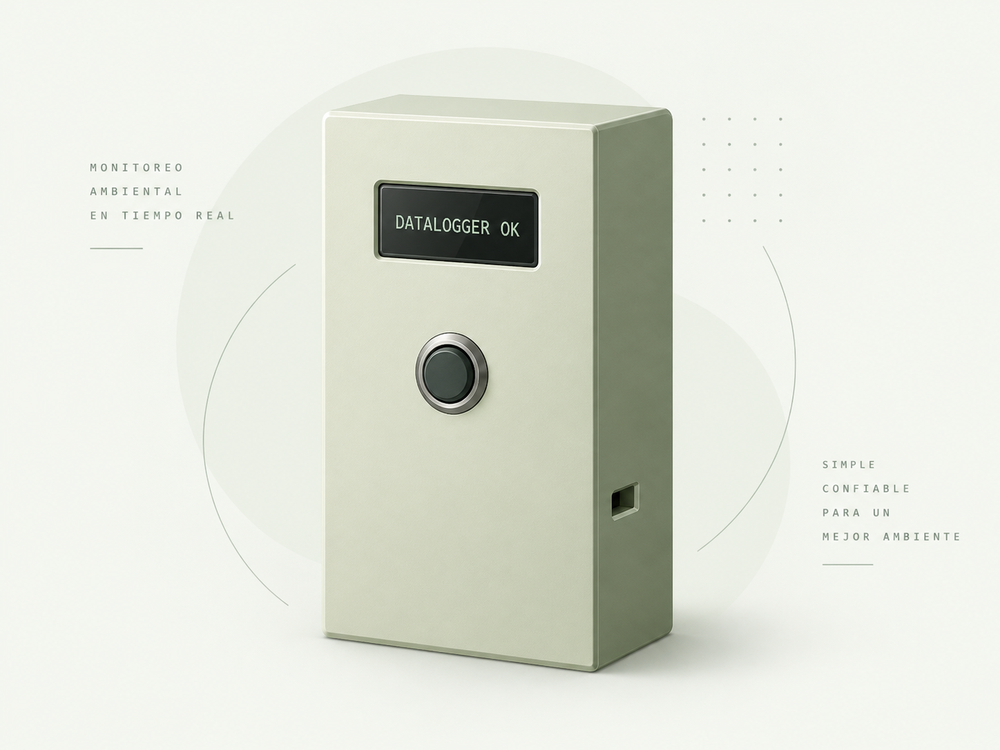
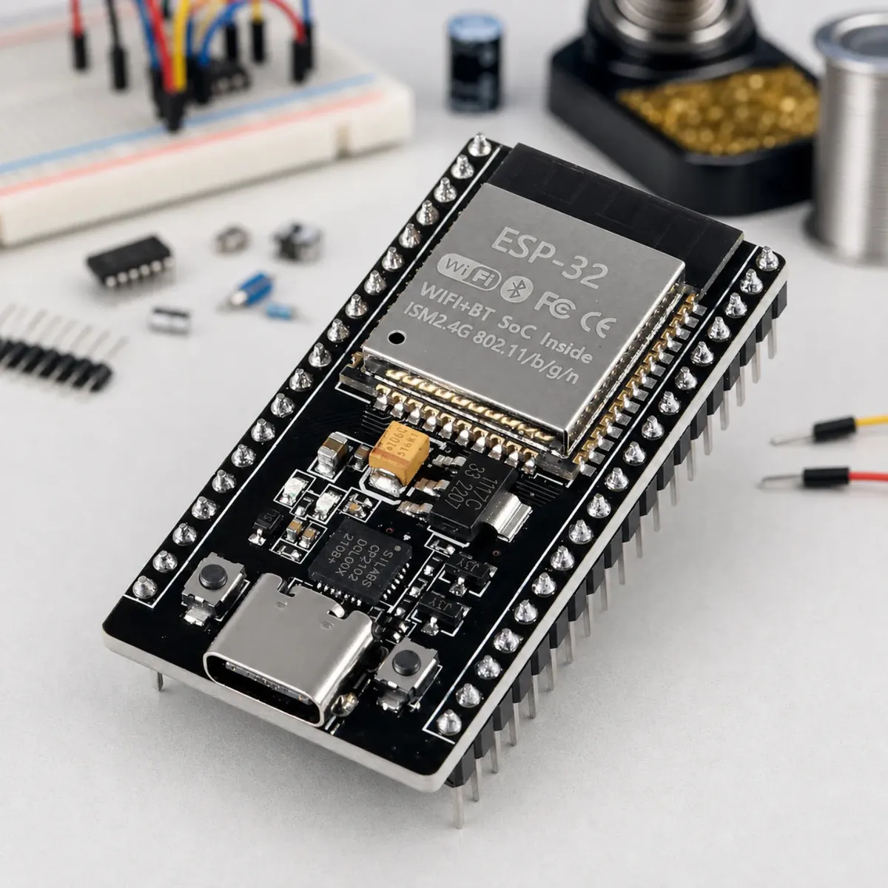
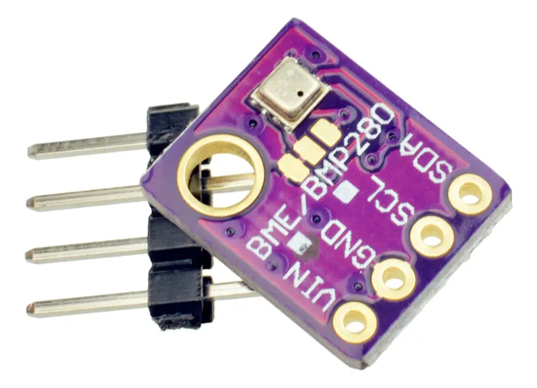
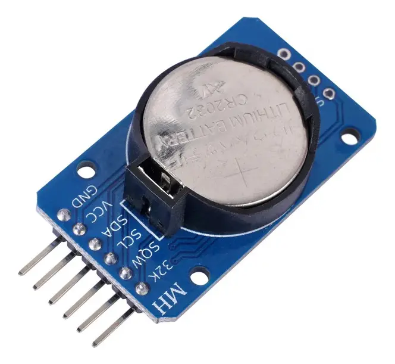
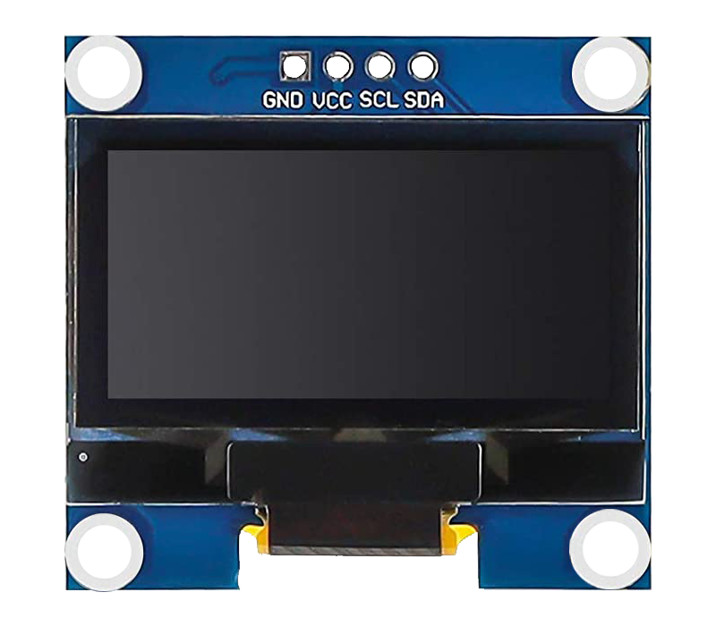
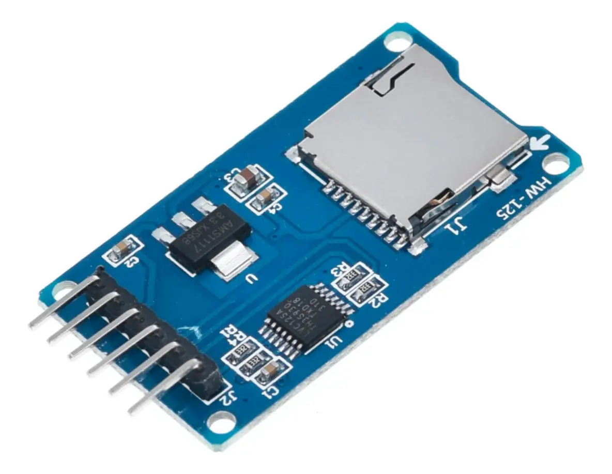
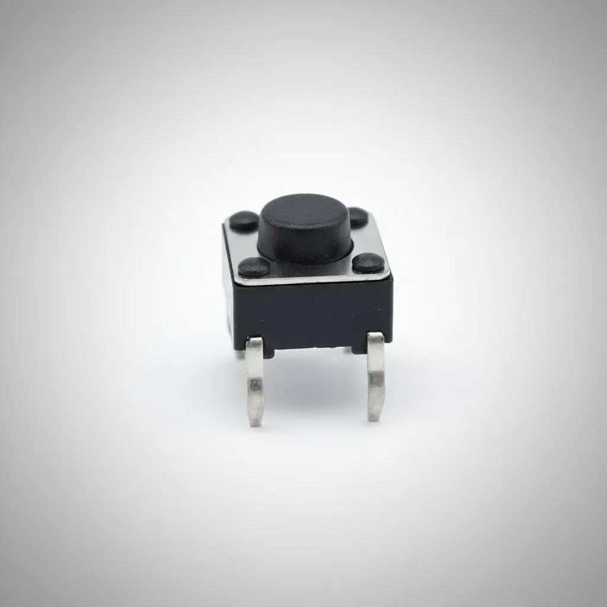
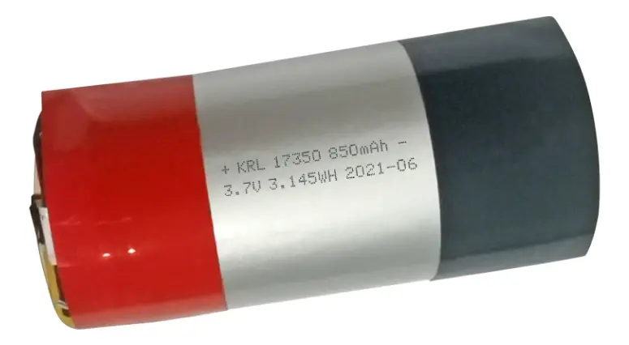
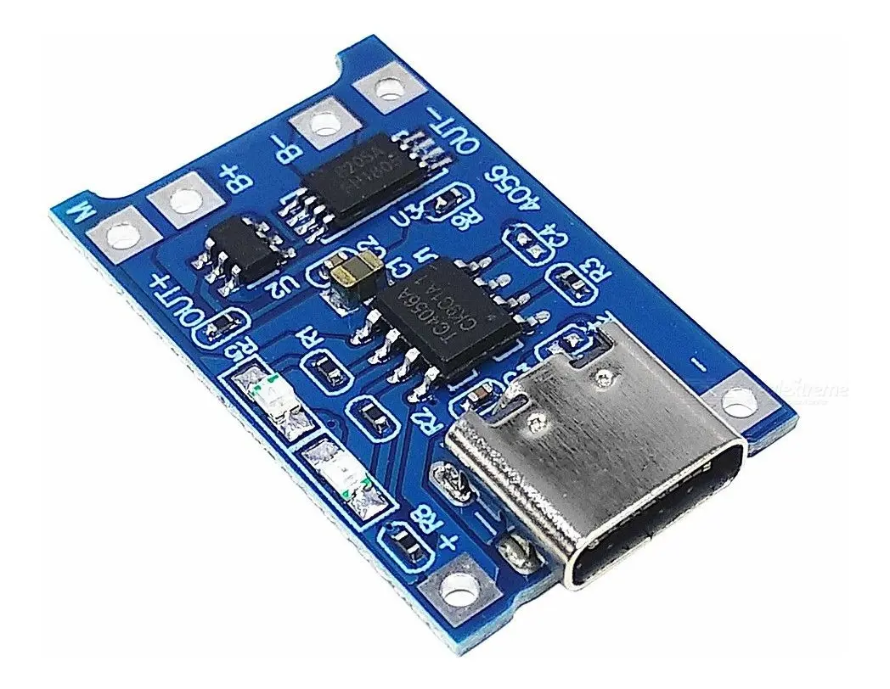

Observar
Consultá las condiciones del ambiente y detectá cambios.
PROYECTO FINAL · 7.º AÑO
Monitoreo ambiental, almacenamiento y visualización de datos en tiempo real.
Sistema basado en ESP32 capaz de medir temperatura, humedad y presión atmosférica, almacenar las mediciones y mostrarlas mediante una interfaz web.

DEL ENTORNO
al dato.
01 / EL PROYECTO
DataLogger nace como un proyecto final que reúne electrónica, programación y diseño. Su objetivo es convertir las condiciones del ambiente en información que se pueda consultar y analizar.
El desarrollo conecta el dispositivo físico con una experiencia web: desde la adquisición de una lectura hasta su interpretación por el usuario.
02 / FUNCIONES
Cuatro tareas que conectan las mediciones con su uso cotidiano.
Consultá las condiciones del ambiente y detectá cambios.
Compará períodos y encontrá patrones en las mediciones.
Mantené un historial para volver sobre los datos cuando lo necesites.
Adaptá el registro y las alertas a las necesidades del proyecto.
03 / ARQUITECTURA
Un recorrido claro, desde la captura de una medición hasta su visualización.
Cada medición conserva una marca temporal. La pantalla OLED permite consultar información en el equipo, mientras que la API conecta los registros con el navegador.
04 / HARDWARE
Medición, control y alimentación. Conocé los componentes que dan forma al dispositivo.

01Coordina las lecturas, el registro en microSD y la conexión WiFi. Ejecuta el servidor web del dispositivo.

02Mide temperatura, humedad y presión atmosférica para conocer las condiciones del entorno.

03Aporta la referencia temporal que se asocia a cada medición registrada.

04Muestra información directamente en el DataLogger, sin abrir la interfaz web.

05Permite guardar las mediciones en archivos CSV y alojar los archivos de la interfaz web.

06Permite interactuar con el dispositivo mediante una entrada física.

07Forma parte del sistema de alimentación del equipo para su uso portátil.

08Integra la carga de la batería en el sistema de alimentación del proyecto.
05 / EXPLORÁ EL PROYECTO
Conocé la interfaz, poné en marcha el equipo o consultá el manual. Cada recorrido tiene su propio espacio.
Recorré las siete pantallas y descubrí qué podés hacer en cada una.
Ver las pantallasUna guía breve para conectar el DataLogger y empezar a usarlo.
Abrir Quick StartUso, configuración y diagnóstico del sistema, organizados por tema.
Leer el manual06 / EQUIPO
Las personas detrás del DataLogger y sus responsabilidades en el desarrollo.